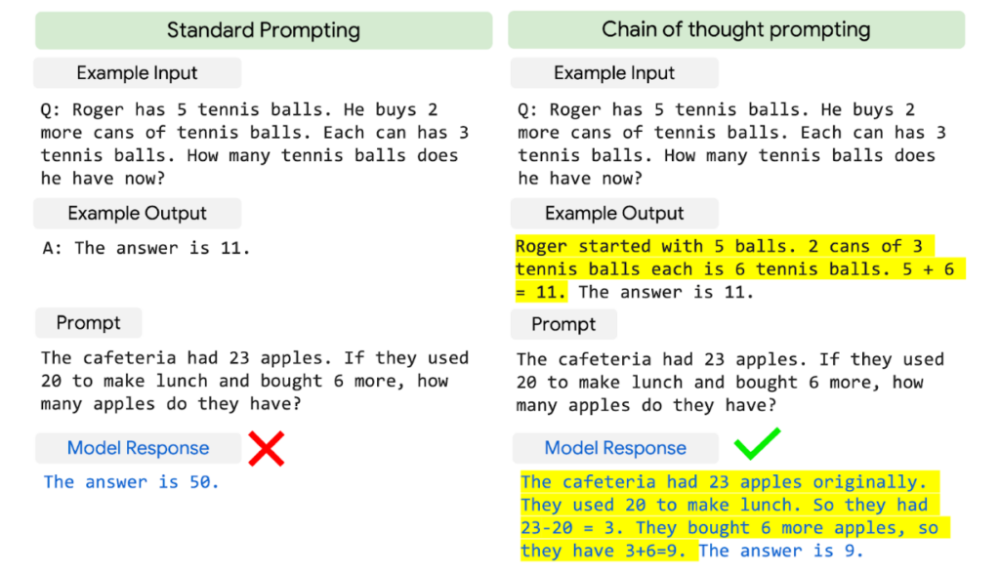

Transformer & LLMs
Tae-Geun Kim & ChatGPT
Transformer & LLMsSeq2SeqSeq2Seq with AttentionTransformerLLM HistoryGPTBERTGPT-3PaLMReferencesImagesPapers
Seq2Seq

Published year & Author: The Seq2Seq model was introduced in 2014 by Ilya Sutskever, Oriol Vinyals, and Quoc V. Le in their paper "Sequence to Sequence Learning with Neural Networks."
Briefly describe algorithms step-by-step. Also describe techniques that original authors used:
Encoder: Processes the input sequence using an RNN or LSTM.
The input sequence is passed through the encoder one token at a time.
The encoder updates its hidden state at each time step based on the current input token and the previous hidden state.
The final hidden state of the encoder becomes the context vector, which is a fixed-size representation of the input sequence.
Decoder: Generates the output sequence using an RNN or LSTM.
The decoder starts with a special start-of-sequence (SOS) token as input and the context vector as its initial hidden state.
For each step, the decoder generates a probability distribution over the possible output tokens, selects the token with the highest probability, and then uses it as input for the next step.
The process continues until the decoder generates an end-of-sequence (EOS) token or reaches a predefined maximum output length.
Teacher forcing: The target output sequence is used as input to the decoder during training instead of the decoder's own predictions.
Main motivation: The main motivation behind Seq2Seq models was to enable the conversion of one sequence of data into another sequence, particularly for natural language processing tasks like machine translation and text summarization.
Pros:
Seq2Seq models can handle input and output sequences of varying lengths.
They can learn complex mappings between input and output sequences and generalize well to unseen data when trained on large datasets.
With the addition of attention mechanisms, Seq2Seq models can better handle long-range dependencies in the data.
Cons:
The basic Seq2Seq model relies on a single fixed-size context vector, which may lead to difficulty in capturing all the information in long input sequences.
Training Seq2Seq models can be computationally intensive, especially for long sequences.
The model's performance can degrade when dealing with very long input sequences, as it may struggle to remember important information from the beginning of the sequence.

Seq2Seq with Attention

Published year & Author: The Seq2Seq with Attention model was introduced in 2015 by Dzmitry Bahdanau, Kyunghyun Cho, and Yoshua Bengio in their paper "Neural Machine Translation by Jointly Learning to Align and Translate."
Briefly describe algorithms step-by-step. Also describe techniques that original authors used:
Encoder: Similar to the standard Seq2Seq model, the encoder processes the input sequence using an RNN or LSTM.
Attention mechanism: Computes a weight for each encoder hidden state based on the decoder's previous hidden state.
The attention mechanism takes the decoder's previous hidden state and all encoder hidden states as input.
It computes a score for each encoder hidden state using a scoring function (e.g., dot product, additive, or multiplicative attention).
The scores are normalized using a softmax function, creating attention weights.
A weighted sum of the encoder hidden states is calculated using the attention weights, resulting in a context vector for the current decoding step.
Decoder: Generates the output sequence using an RNN or LSTM, but now with the context vector from the attention mechanism.
The decoder's initial hidden state is still based on the encoder's final hidden state.
At each step, the decoder generates a probability distribution over the possible output tokens, selects the token with the highest probability, and then uses it as input for the next step.
The attention-based context vector is used as an additional input to the decoder at each step, guiding the decoder to focus on relevant parts of the input sequence.
Main motivation: The main motivation behind Seq2Seq with Attention was to overcome the limitations of the basic Seq2Seq model, particularly its reliance on a single fixed-size context vector, which could struggle to capture all the information in long input sequences. The attention mechanism allows the model to dynamically focus on different parts of the input sequence during the decoding process.
Pros:
Attention improves the model's ability to handle long-range dependencies and better capture the relationships between input and output tokens.
It provides interpretability, as the attention weights offer insights into which parts of the input sequence the model is focusing on at each decoding step.
Seq2Seq with Attention achieves better performance on various NLP tasks, such as machine translation and text summarization, compared to the basic Seq2Seq model.
Cons:
The addition of attention increases the computational complexity of the model, as it requires calculating attention weights and context vectors at each decoding step.
While the attention mechanism mitigates some of the issues related to capturing information in long sequences, it may still struggle with very long input sequences or suffer from overfitting in cases of limited training data.
Seq2Seq with Attention can still be outperformed by more advanced models like Transformers, which utilize self-attention mechanisms and can process input sequences in parallel.
How to compute attention score?

Original authors used last method - Bahdanau attention (MLP)
Bilinear function (aka Luong attention) - used in the paper "Effective approaches to Attention-based Neural Machine Translation".
Interpretability
From Neural Machine Translation by Jointly Learning to Align and Translate.

Transformer

The animation is from the Google AI blog post
Published year & Author: The Transformer model was introduced in 2017 by Ashish Vaswani and his team in their paper "Attention is All You Need."
Briefly describe algorithms step-by-step. Also describe techniques that original authors used:
Multi-head self-attention: Computes multiple sets of attention weights and context vectors in parallel for both the input and output sequences.
Each attention head computes a set of attention weights by comparing input tokens with other input tokens (in the encoder) or output tokens with input tokens (in the decoder).
The attention weights are normalized using a softmax function, and a weighted sum of the input tokens is computed for each head, resulting in multiple context vectors.
Position-wise feed-forward networks: Applied independently to each token in the sequence after the multi-head self-attention layer.
Consists of two dense (fully connected) layers with a ReLU activation function in between
Residual connections and layer normalization: Applied after both the multi-head self-attention and position-wise feed-forward layers to stabilize training and improve generalization.
The output of each sub-layer is combined with its input through an element-wise addition (residual connection) and then normalized using layer normalization.
Positional encoding: Injects positional information into the model, as the self-attention mechanism is not sensitive to token order.
The positional encoding is added to the input token embeddings before being passed to the first layer of the model.
Main motivation: The main motivation behind the Transformer model was to address the limitations of RNNs and LSTMs in handling long sequences and long-range dependencies by leveraging self-attention mechanisms, which allow for parallel processing of the entire input sequence and a more efficient computation.
Pros:
Transformers can process input sequences in parallel, resulting in faster training and inference compared to sequential models like RNNs and LSTMs.
The self-attention mechanism allows Transformers to better handle long-range dependencies and capture the relationships between input and output tokens.
Transformers have achieved state-of-the-art performance on various NLP tasks, including machine translation, text summarization, and question-answering systems.
They have become the foundation for many advanced models like BERT and GPT, which have further improved the performance of NLP applications.
Cons:
Transformers can have high memory requirements due to the self-attention mechanism's quadratic complexity with respect to the input sequence length, making it difficult to process very long sequences.
The large number of parameters in Transformer models, especially in pre-trained variants like BERT and GPT, can result in increased memory consumption and longer training times.
Transformers may require large-scale training data to achieve optimal performance, and the absence of recurrent layers means they rely heavily on positional encoding to capture the order of tokens in the input sequence.
Self-attention


Masked self-attention
Architecture

Encoder:
Input Embeddings: The input tokens are first converted into continuous vectors using token embeddings.
Positional Encoding: Positional information is added to the input embeddings using a fixed positional encoding function, ensuring that the model can recognize the order of tokens in the sequence.
Encoder Layers: The encoder is composed of a stack of identical layers. Each layer consists of two primary sub-layers: multi-head self-attention and position-wise feed-forward networks. a. Multi-Head Self-Attention: This sub-layer computes attention over the input sequence for multiple heads in parallel. For each head, it calculates attention weights by comparing each input token with all other input tokens. The weights are then used to compute a weighted sum of the input tokens, resulting in context vectors. The context vectors from all heads are concatenated and passed through a linear projection layer. b. Position-Wise Feed-Forward Networks: This sub-layer consists of two dense layers with a ReLU activation function in between, applied independently to each token in the sequence. c. Residual Connections and Layer Normalization: After each sub-layer, a residual connection (element-wise addition) and layer normalization are applied to stabilize training and improve generalization.
Decoder:
Output Embeddings: Similar to the input embeddings, output tokens are converted into continuous vectors using token embeddings.
Positional Encoding: Positional information is added to the output embeddings, just like in the encoder.
Decoder Layers: The decoder is also composed of a stack of identical layers. Each layer consists of three primary sub-layers: masked multi-head self-attention, encoder-decoder attention, and position-wise feed-forward networks.
Masked Multi-Head Self-Attention: This sub-layer is similar to the one in the encoder but uses a masking mechanism to ensure that the attention mechanism only considers the current and previous output tokens during the decoding process.
Encoder-Decoder Attention: This sub-layer computes attention over the encoder's output, allowing the decoder to focus on relevant parts of the input sequence. It uses the same multi-head attention mechanism but with the decoder's hidden states as queries and the encoder's hidden states as keys and values.
Position-Wise Feed-Forward Networks, Residual Connections, and Layer Normalization: These components are the same as those in the encoder layers.
Output Layer: The final step in the decoder is a linear projection layer that maps the hidden states back to the vocabulary size, followed by a softmax layer to compute the probabilities of each token in the output sequence.
Is a large number of parameters (overparametrized) really a disadvantage?
Althea Power et al., Grokking: Generalization Beyond Overfitting on Small Algorithmic Datasets [arXiv: 2201.02177]
Characterizing Emergent Phenomena in Large Language Models, Google AI Blog
LLM History
Timeline History of Large Language Models, Voicebot.ai
GPT
Published year & Author: GPT(Generative Pre-trained Transformer) was introduced in 2018 by Alec Radford and his team at OpenAI in their paper "Improving Language Understanding by Generative Pre-Training."
Briefly describe algorithms step-by-step. Also describe techniques that original authors used:
Pre-training: GPT is pre-trained on large corpora using unsupervised learning, leveraging a unidirectional (left-to-right) Transformer architecture.
Language Modeling: GPT is trained to predict the next token in a sequence given the preceding tokens, effectively learning to generate text that resembles the training data.
Due to its unidirectional nature, GPT learns context representations only from the left context (preceding tokens) during pre-training.
Fine-tuning: After the pre-training phase, GPT can be fine-tuned on specific tasks, such as text classification, question-answering, or text generation.
To adapt GPT to a specific task, a task-specific output layer is added to the pre-trained GPT model, and the entire model is fine-tuned using labeled data from the target task.
Main motivation: The main motivation behind GPT was to create a pre-trained model that can be easily fine-tuned on various NLP tasks, taking advantage of the powerful Transformer architecture and unsupervised learning on large-scale datasets. This approach enables the model to generalize well and achieve high performance across a wide range of tasks.
Pros:
GPT leverages unsupervised pre-training on large datasets, enabling the model to learn rich language representations and improve performance on various NLP tasks.
It can be easily fine-tuned for specific tasks with relatively small labeled datasets, saving time and resources compared to training large models from scratch.
GPT has demonstrated strong performance on several NLP benchmarks and tasks, such as language modeling, text classification, and question-answering.
Its generative nature makes it well-suited for tasks involving text generation, such as summarization or machine translation.
Cons:
GPT has a large number of parameters, which can lead to increased memory consumption, longer training times, and high computational resource requirements.
The unidirectional context in GPT limits its ability to capture bidirectional relationships between words, which can be a disadvantage compared to bidirectional models like BERT.
GPT's pre-training phase can be computationally expensive and time-consuming due to its large size. However, users can often leverage pre-trained GPT models provided by the research community or companies like OpenAI and fine-tune them for specific tasks, bypassing the pre-training step.
BERT
Published year & Author: BERT(Bidirectional Encoder Representations from Transformers) was introduced in 2018 by Jacob Devlin and his team at Google AI Language in their paper "BERT: Pre-training of Deep Bidirectional Transformers for Language Understanding."
Briefly describe algorithms step-by-step. Also describe techniques that original authors used:
Pre-training: BERT is pre-trained on large corpora using unsupervised learning with two objectives: masked language modeling and next sentence prediction.
Masked Language Modeling (MLM): Randomly masks a percentage of tokens in the input sequence, and the model is trained to predict the masked tokens based on the context provided by the non-masked tokens. This allows BERT to learn a bidirectional representation of the input sequence.
Next Sentence Prediction (NSP): BERT is trained to predict whether a sentence comes immediately after another given sentence. This task helps the model to learn relationships between sentences and understand sentence pairs' coherence.
Fine-tuning: After the pre-training phase, BERT can be fine-tuned on specific tasks, such as text classification, question-answering, or named entity recognition.
To adapt BERT to a specific task, a task-specific output layer is added to the pre-trained BERT model, and the entire model is fine-tuned using labeled data from the target task.
Main motivation: The main motivation behind BERT was to create a pre-trained model that can be easily fine-tuned on various NLP tasks while leveraging the power of bidirectional context and unsupervised learning. This approach enables the model to generalize well and achieve state-of-the-art performance across a wide range of tasks.
Pros:
BERT captures bidirectional context, allowing the model to better understand the relationships between words and sentences.
It leverages unsupervised pre-training on large datasets, which enables the model to learn rich language representations and improve performance on various NLP tasks.
BERT can be easily fine-tuned for specific tasks with relatively small labeled datasets, saving time and resources compared to training large models from scratch.
BERT has achieved state-of-the-art performance on numerous NLP benchmarks, including GLUE, SQuAD, and SWAG.
Cons:
BERT has a large number of parameters, which can lead to increased memory consumption, longer training times, and high computational resource requirements.
The model may be overkill for some simpler tasks or when working with limited training data, as smaller models might perform comparably with lower resource demands.
BERT's pre-training phase can be computationally expensive and time-consuming due to its large size and bidirectional training approach. However, users can often leverage pre-trained BERT models provided by the research community or companies like Google and fine-tune them for specific tasks, bypassing the pre-training step.
GPT-3
Published year & Author: GPT-3 was introduced in 2020 by Tom B. Brown and his team at OpenAI in their paper "Language Models are Few-Shot Learners."
Briefly describe algorithms step-by-step. Also describe techniques that original authors used:
Pre-training: GPT-3 is pre-trained on large corpora using unsupervised learning, leveraging a unidirectional (left-to-right) Transformer architecture, similar to its predecessor GPT-2.
Language Modeling: GPT-3 is trained to predict the next token in a sequence given the preceding tokens, effectively learning to generate text that resembles the training data.
The most significant difference between GPT-3 and previous versions is the massive scale of the model. GPT-3 consists of 175 billion parameters, making it one of the largest language models ever created.
Fine-tuning and Few-Shot Learning: GPT-3's main innovation is its ability to perform well on various NLP tasks with minimal task-specific fine-tuning, using few-shot or even zero-shot learning.
Instead of explicitly fine-tuning GPT-3 on a specific task, the model is given a text prompt that includes examples of the desired task (few-shot learning) or a description of the task (zero-shot learning). GPT-3 then generates text that satisfies the given task requirements.
Main motivation: The main motivation behind GPT-3 was to push the limits of pre-training and demonstrate that a sufficiently large language model can perform a wide variety of tasks without explicit fine-tuning, using few-shot or zero-shot learning.
Pros:
GPT-3 leverages its massive scale to learn rich language representations, leading to impressive performance on various NLP tasks, even without explicit fine-tuning.
It can perform well using few-shot or zero-shot learning, making it more adaptable to new tasks with limited labeled data.
GPT-3 has demonstrated strong performance on several NLP benchmarks and tasks, such as language modeling, text classification, question-answering, and text generation.
Its generative nature makes it well-suited for tasks involving text generation, such as summarization, machine translation, or creative writing.
Cons:
GPT-3 has a large number of parameters, which can lead to increased memory consumption, longer training times, and high computational resource requirements.
The unidirectional context in GPT-3 limits its ability to capture bidirectional relationships between words, which can be a disadvantage compared to bidirectional models like BERT.
GPT-3's pre-training phase can be computationally expensive and time-consuming due to its massive size.
The large-scale nature of GPT-3 also raises concerns about its environmental impact, as training such a model consumes significant amounts of energy.
GPT-3 might generate text that is coherent but factually incorrect, biased, or inappropriate, as it learns from potentially biased and noisy data sources present in the training data.
PaLM

Published year & Author: PaLM(Pathways Language Models) was introduced in 2022 by Aakanksha Chowdhery and her team at Google Research in their paper "PaLM: Scaling Language Modeling with Pathways".
Main motivation (by ChatPDF) : The main motivation behind PaLM is to develop a large-scale, modularized system that can achieve broad generalization capabilities across multiple modalities. PaLM is a 540-billion parameter, densely activated, Transformer language model that has been trained to achieve remarkable performance across a variety of natural language tasks using few-shot learning. The goal of this approach is to drastically reduce the number of task-specific training examples needed to adapt the model to a particular application, making it more efficient and effective than traditional language modeling approaches. By achieving state-of-the-art performance across both natural language and code tasks in a single model, PaLM represents a significant step forward in the field of natural language processing and machine learning. You can find more information about the motivation behind PaLM on page 50 of this PDF.
Pros (by ChatPDF) :
Few-shot learning: PaLM is trained using few-shot learning, which drastically reduces the number of task-specific training examples needed to adapt the model to a particular application. This makes it more efficient and effective than traditional language modeling approaches.
Large-scale: PaLM is a 540-billion parameter, densely activated, Transformer language model, making it one of the largest language models ever developed. This large scale allows it to achieve state-of-the-art performance across both natural language and code tasks in a single model.
Generalization: PaLM has broad generalization capabilities across multiple modalities, meaning that it can be applied to a wide range of natural language tasks with high accuracy.
State-of-the-art performance: PaLM achieves outstanding few-shot performance, achieving state-of-the-art results on 28 out of the 29 most widely evaluated English NLP tasks when compared to the best per-task result from any previous large language model.
Chain-of-thought

PaLM-Coder
References
Images
Image of Seq2Seq with Attention & Transformer : Lena Voita
Images of transfomer : Google AI Blog
Images of Timeline in LLM : Voicebot.ai
Images of PaLM : ModuLabs
Papers
Ilya Sutskever, Oriol Vinyals, Quoc V. Le, Sequence to Sequence Learning with Neural Networks, arXiv:1409.3215
Dzmitry Bahdanau, Kyunghyun Cho, Yoshua Bengio, Neural Machine Translation by Jointly Learning to Align and Translate, arXiv: 1409.0473
Ashish Vaswani et al., Attention is All you Need, arXiv: 1706.03762
Althea Power et al., Grokking: Generalization Beyond Overfitting on Small Algorithmic Datasets, arXiv: 2201.02177
Radford, A., Narasimhan, K., Salimans, T., and Sutskever, I., Improving language understanding by generative pre-training, 2018
Jacob Devlin, Ming-Wei Chang, Kenton Lee, Kristina Toutanova, BERT: Pre-training of Deep Bidirectional Transformers for Language Understanding, arXiv: 1810.04805
Tom B. Brown et al., Language Models are Few-Shot Learners., arXiv:2005.14165
Aakanksha Chowdhery et al., PaLM: Scaling Language Modeling with Pathways, arXiv: 2204.02311